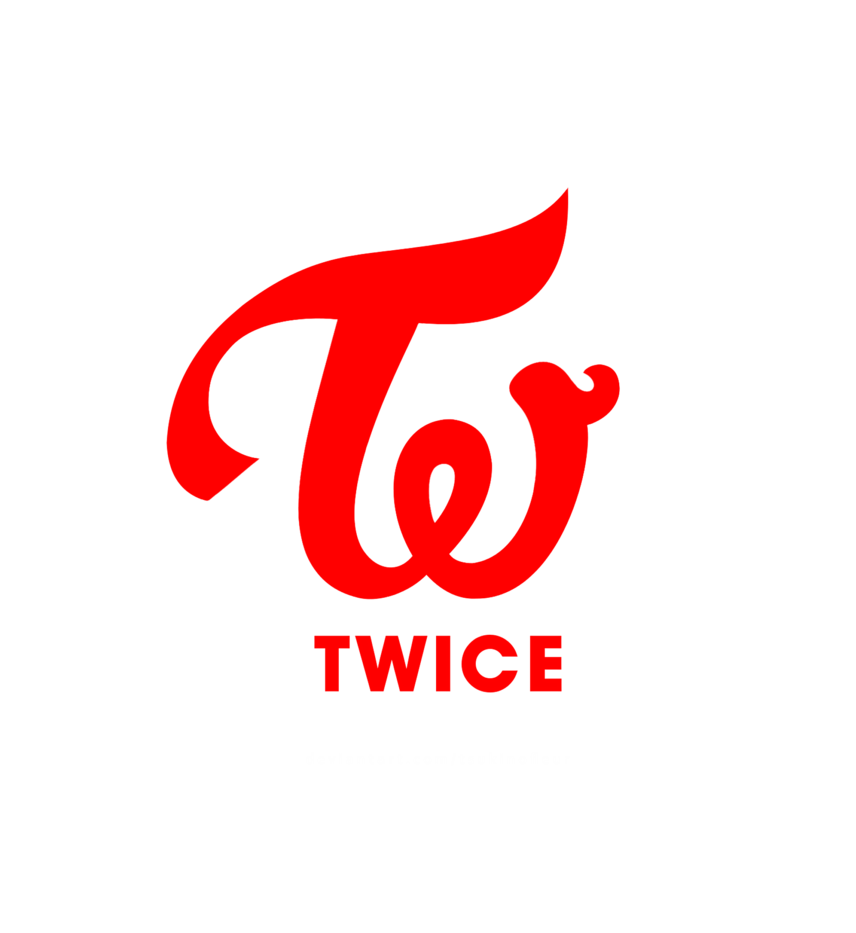

TWICE
TWICE is a South Korean girl group formed by JYP Entertainment through the 2015 reality show Sixteen.
Members
- Park Jihyo
- Im Nayeon
- Yoo Jeong Yeon
- Hirai Momo
- Minatozaki Sana
- Myoui Mina
- Kim Dahyun
- Son Chae Young
- Chou Tzuyu
Discography
- Feel Special
- Feel Special
- Rainbow
- Get Loud
- Trick It
- Love Foolish
- 21:29
- Breakthrough
- Fancy You
- Fancy
- Stuck in My Head
- Girls Like Us
- Hot
- Turn It Up
- Strawberry
Contact Us